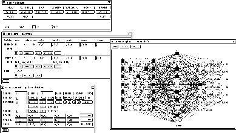

The graphical user interface has the following windows, which can be positioned and handled independently ( toplevel shells):
Of these windows only the Manager panel and possibly one or more 2D displays are open from the start, the other windows are opened with the corresponding buttons in the manager panel or by giving the corresponding key code while the mouse pointer is in one of the SNNS windows.
Additionally, there are several popup windows ( transient
shells) which only become visible when called and block all other
XGUI windows. Among them are various Setup panels for
adjustments of the graphical representation. (called with the button
 in the various windows)
in the various windows)
There are a number of other popup windows which are invoked by pressing a button in one of the main windows or choosing a menu.

Figure  shows a typical screen setup. The
Manager panel contains buttons to call all other windows of the
interface and displays the status of SNNS. It should therefore always
be kept visible.
shows a typical screen setup. The
Manager panel contains buttons to call all other windows of the
interface and displays the status of SNNS. It should therefore always
be kept visible.
The Info panel displays the attributes of two units and the data of the link between them. All attributes may also be changed here. The data displayed here is important for many editor commands.
In each of the Displays a part of the network is displayed,
while all settings can be changed using Setup. These windows
also allow access to the network editor using the keyboard (see
also chapter  ).
).
The Control panel controls the simulator operations during learning and recall.
In the File panel a log file can be specified, where all XGUI output to stdout is copied to. A variety of data about the network can be displayed here. Also a record is kept on the load and save of files and on the teaching.
The complete help text from the file help.hdoc is available in
the text section of a help window. Information about a word can
be retrieved by marking that word in the text and then clicking
 or . A list of keywords can be obtained
by a click to . This window also allows context
sensitive help, when the editor is used with the keyboard.
or . A list of keywords can be obtained
by a click to . This window also allows context
sensitive help, when the editor is used with the keyboard.
QUIT is used to leave XGUI. XGUI can also be left by pressing ALT-q in any SNNS window. Pressing ALT-Q will exit SNNS without asking further questions.